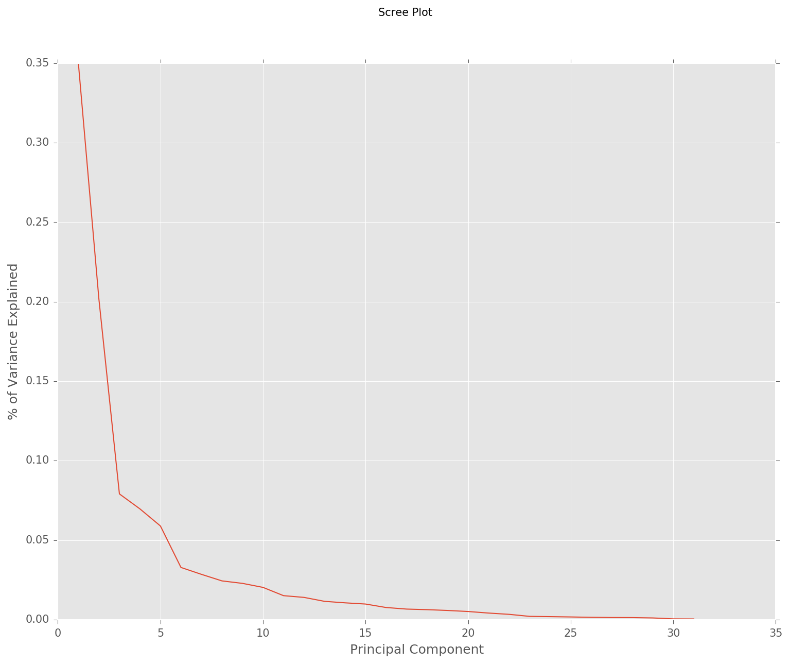
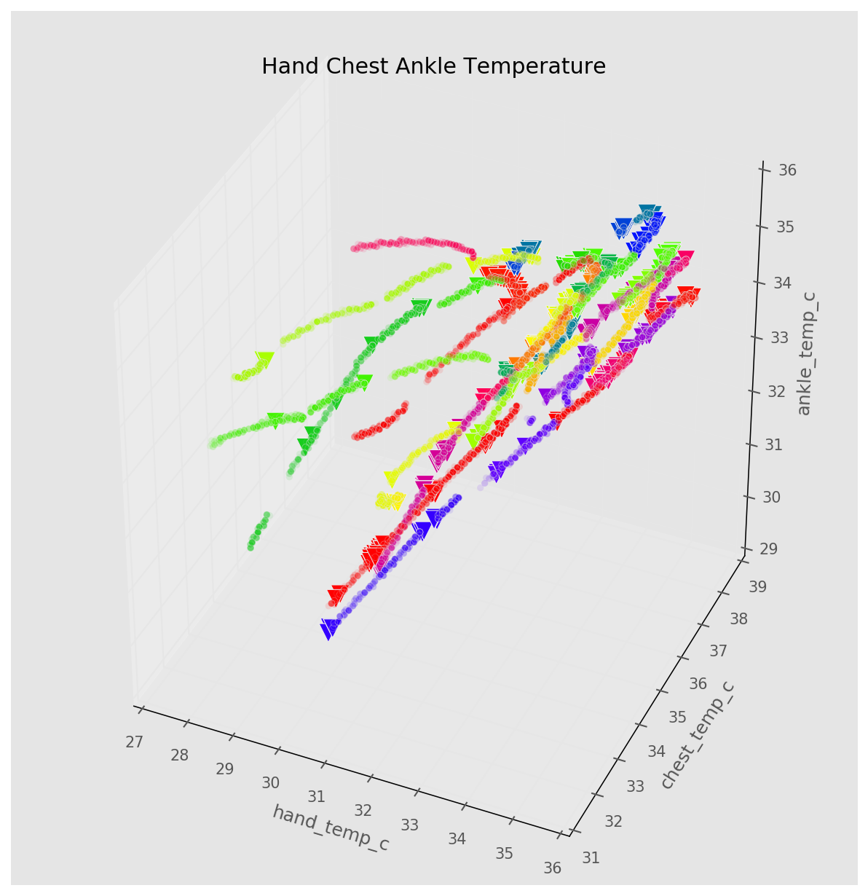
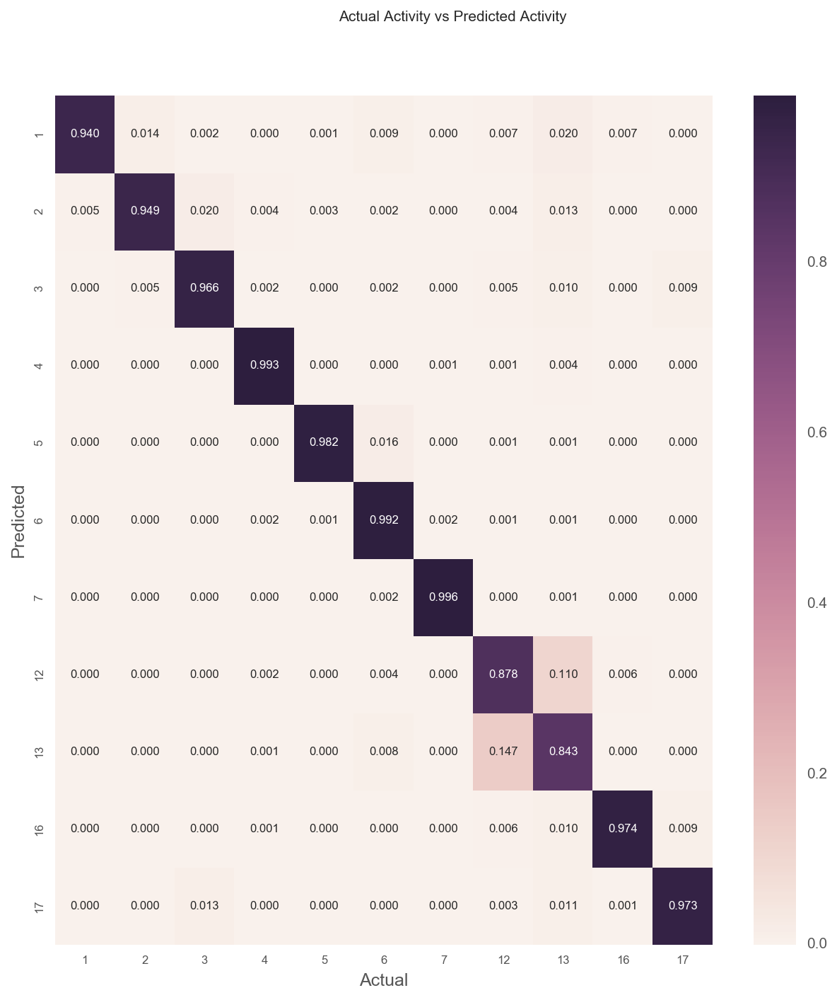
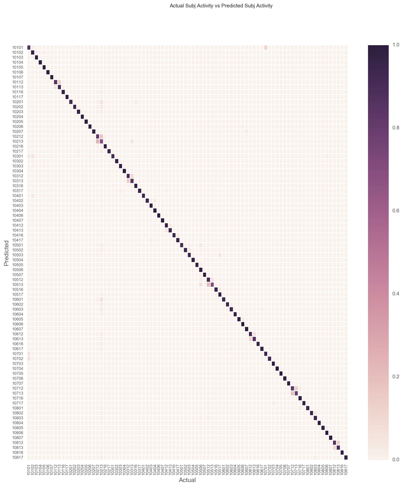

Machine Learning Project
Human Activity Recognition using Machine Learning Techniques
About Our Project
Task : Predict the activity and the person performing the activity
Performance: Percentage of actions and person performing the activity correctly classified
Experience: PAMAP2 data set of labeled IMU readings available from the UCI Machine Learning Repository
PAMAP2 Data Set
- A Physical Activity Monitoring Dataset
- 3 wireless inertial measurement units (IMU):
- sampling frequency: 100Hz on wrist, chest and ankle
- records temperature, acceleration, 3D-magnetometer data, 3D-gyroscope data, orientation etc...
- 1 heart rate monitor with sampling frequency of ~9Hz
Activities Include ...
Lying, Sitting, Standing, Ironing, Vacuuming, Walking Upstairs Walking Downstairs, Normal Walk, Nordic Walk, Cycling, Running
Model Construction Methods
- Classify Subject (Person) --> Classify Action of the Subject
Model Construction Methods
- Classify Action --> Classify Subject(Person)


Model Construction Methods
- Classify Both Subject and Action Simultaneously


Data Preparation
Missing Values - Missing values caused by different frequencies. Back fill or Forward fill the empty value
Invalid Data - Acceleration of ±6g is saturated
Derived Subject-Activity - Concatenate subject and activity
Data Exploration

These variables were have greater variance
heartrate_bpmhand_temp_cchest_temp_cankle_temp_c*_magnetometer_*
We will return to the after fitting the models

Strong correlations between several variables:
chest_temp_candhand_temp_cchest_3d_magnetometerandchest_3d_accelankle_3d_magnetometerandchest_3d_magnetometer
Principal Component Analysis
Most of the variance can be explained by the first 3 components

- PC1 has the strongest correlations with
chest_temp_c,hand_temp_c, andankle_temp_c - PC2 has the strongest correlations with
heartrate_bpm - PC2 has the strongest correlations with
ankle_temp_c

Model Comparison
Accuracy and Computational Complexity were the primary considerations
- The classifiers used were the following:
- SVM with Stochastic Gradient Descent (SGD)
- Gaussian Naive Bayes
- Multi-output Classifier using the best model from initial comparison
SVM without SGD (Linear Kernel) was ran but model fitting took more than 5 hours and did not complete.
SVM with SGD
- May be stuck in a local optima.
- Hence model fitted 100 times.
- Results are shown below.
| Method | Accuracy (mean) | Accuracy (max) | Accuracy (min) | Average Time Taken (seconds) |
|---|---|---|---|---|
| S -> A | 0.48 | 0.44 | 0.52 | (S+A) 11.11 + 14.54 = 25.65 |
| A -> S | 0.48 | 0.43 | 0.53 | (A+S) 15.19 + 11.28 = 26.47 |
| Both | 0.63 | 0.58 | 0.67 | 113.79 |
SVM with SGD
- To find optimal smoothing parameter alpha, Grid Search was used
- Alpha values tried
0.0001,0.001,0.01,0.1,1 - 2-fold Cross Validation was used with Grid Search
- Model fitted 60 times (took more than 12 hours)
- Best alpha at 0.1
- Results are shown below
| Method | Accuracy (mean) | Accuracy (max) | Accuracy (min) | Average Time Taken (seconds) |
|---|---|---|---|---|
| Both | 0.63 | 0.49 | 0.68 | 621.75 |
Gaussian Naive Bayes
- Chosen as it is performant in real-world situations
- Variables are scaled as measurements were in different scales
- PCA was done for initial model
| Method | Accuracy | Time Taken (seconds) |
|---|---|---|
| S -> A | 0.40 | (S+A) 0.50 + 0.52 = 1.02 |
| A -> S | 0.50 | (A+S) 0.63 + 0.59 = 1.21 |
| Both | 0.64 | 0.74 |
- 10 times faster than the SVM model in the S -> A and A -> S conditions
- Over 100 times faster under the 'Both' condition.
- Another Gaussian Naive Bayes model was fitted, but this time without PCA
- Accuracy increased to 0.96 with all variables
- Takes more than double the time to train (1.81s vs 0.74s)
- Time to train traded off for accuracy
| Method | Accuracy | Time Taken (seconds) |
|---|---|---|
| S -> A | 0.54 | (S+A) 1.36 + 1.27 = 2.63 |
| A -> S | 0.54 | (A+S) 1.43 + 1.48 = 2.91 |
| Both | 0.96 | 1.81 |
Multi-output Classifier Comparison
sklearn's multi-output classifier used with Gaussian Naive Bayes- Less performant than the standard classifier in terms of accuracy and duration.
- Classifies by fitting 1 classifier per target.
- 1 classifier will be fitted to predict Activity and 1 classifier will be fitted to predict Subject.
| Method | Accuracy | Time Taken (seconds) |
|---|---|---|
| Multi-Output | 0.54 | 2.28 |
k-fold Cross Validation
- 10 fold cross validation was ran
- The average accuracy for the 10 folder is 0.9363
- Does not show any indications of overfitting
Visualizing the Classifications
- Colors denote the various subject - activities
- Circles denote correctly predicted classes
- Inverted triangles denote incorrectly predicted classes

Visualizing the Classifications

Visualizing the Classifications

Visualizing the Classifications

- Classifier has problems classifying activities 12 and 13
- Corresponds to Ascending Stairs and Descending Stairs
- These 2 activities to be quite similar which explains the error in classification
- Lastly, we plot the subject-activity classification

Key Takeaways
The selected classifier (Gaussian Naive Bayes) have problems classifying Ascending and Descending Stairs.
Gaussian Naive Bayes model without PCA tends to perform better, in terms of both accuracy and efficiency.
Especially so when sample size is large
Linear SVM without SGD was very slow to train on this data set.
SVM with SGD provided a performance boost, but could not compare with Gaussian Naive Bayes in terms of accuracy
Key Takeaways
Concatenating the multiple outputs into one target variable with more unique levels performs better than trying to predict the target variables as standalone outputs.
In the application of machine learning algorithms, different trade offs such as accuracy, time taken to train needs to be considered.
Why did the naive Bayesian suddenly feel patriotic when he heard fireworks?
"He assumed independence."
View on Github